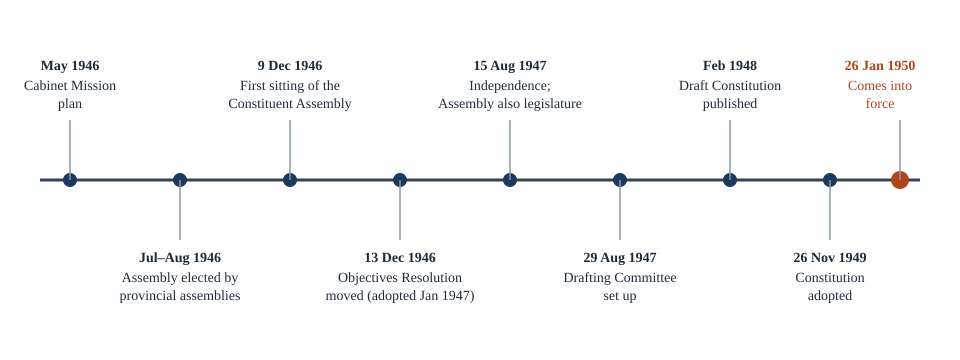

Chapter 1: The Making of the Constitution¶
The Constituent Assembly, its sources and the salient features of the document it produced
Learning outcomes
When you have finished this chapter you should be able to:
- say what a constitution does and why a newly independent India needed a written one;
- outline the colonial laws and political demands that led to the Constituent Assembly;
- describe how the Constituent Assembly was composed, how it worked and how long it took;
- match the main features of the Constitution with the constitutions and laws they were drawn from;
- list and explain the salient features of the Constitution;
- find your way around the document: its Parts, articles and Schedules.
1.1 What a constitution does¶
Every society that governs itself has to answer a few basic questions. Who makes the rules? Who carries them out? Who settles disputes about them? What may those in power never do? How are they chosen, and how are they removed? A constitution is the set of fundamental rules that answers these questions. It creates the organs of government, gives each its powers, sets limits on those powers and states the relationship between the government and the people.
Some countries have constitutions that are not written down in a single document. The United Kingdom is the usual example: its constitution is spread across Acts of Parliament, court judgments and long-standing conventions. Most countries, and India among them, have a written constitution: one document, adopted at a particular moment, that stands above ordinary law. A law that conflicts with it can be struck down by the courts.
Why did India, in particular, need a written constitution in 1947? There were at least four reasons.
- Legitimacy. Until 1947 India was governed under laws made by the British Parliament. A free country needed a framework that came from its own people.
- Diversity. India was, and is, a country of many religions, languages, castes and regions. A written document could set out guarantees that every group could rely on, and that no temporary majority could quietly take away.
- Federation. Power had to be divided between a central government and the provinces (soon to be States), and the princely states had to be brought in. A division of power needs a written text that both sides can point to.
- Social change. The leaders of the national movement wanted the new State to end untouchability, reduce inequality and widen opportunity. A constitution could commit the State to these goals.
Key idea
A constitution is the supreme law of a country. It creates and limits the institutions of government, and it states the basic relationship between the State and the people. In India, any law or executive action that conflicts with the Constitution can be declared void by the courts.
1.2 The road to the Constituent Assembly¶
The Constitution did not appear from nowhere. For nearly a century before 1947, India had been governed under a series of laws passed by the British Parliament, and each of them left something behind.
| Law | What it introduced |
|---|---|
| Government of India Act, 1858 | Transferred rule from the East India Company to the British Crown; a Secretary of State for India in London. |
| Indian Councils Act, 1861 | Associated a few Indians, nominated by the government, with law-making. |
| Indian Councils Act, 1909 (Morley–Minto reforms) | Enlarged legislative councils with some elected members; introduced separate electorates for Muslims. |
| Government of India Act, 1919 (Montagu–Chelmsford reforms) | Dyarchy in the provinces (some subjects run by ministers answerable to the legislature, others reserved); a bicameral central legislature. |
| Government of India Act, 1935 | A proposed All-India Federation with lists of federal, provincial and concurrent subjects; provincial autonomy; a Federal Court; public service commissions. |
| Indian Independence Act, 1947 | Ended British rule; created the dominions of India and Pakistan; gave each Constituent Assembly full power. |
Table 1.1. Colonial laws that shaped Indian government before 1950.
The Government of India Act, 1935 was by far the most important of these. It was a long and detailed law, and many of its administrative arrangements passed into the Constitution: the lists of subjects, the office of Governor, the Federal Court (which became the Supreme Court), the public service commissions and the emergency powers. The federation it proposed never came into being, because the princely states did not join, but provincial autonomy did operate from 1937.
Alongside these laws ran a political demand that Indians should write their own constitution. The Nehru Report of 1928, prepared by a committee of the All Parties Conference under Motilal Nehru, was an early Indian attempt at a constitution, with a list of fundamental rights. In 1935 the Indian National Congress formally demanded a Constituent Assembly elected by the people. The British government accepted the idea in principle during the Second World War, and after the war the Cabinet Mission of 1946 laid down how the Assembly was to be formed.
The Cabinet Mission plan
The Cabinet Mission, three members of the British Cabinet, came to India in 1946. Its plan of May 1946 proposed a Constituent Assembly elected not directly by the people but by the members of the provincial legislative assemblies, with seats allotted to each province roughly in proportion to its population, and divided among the main communities. Representatives of the princely states were to be nominated by their rulers.
1.3 The Constituent Assembly¶
Composition¶
Under the Cabinet Mission plan the Assembly was to have 389 members: 296 from the provinces of British India and 93 from the princely states. The elections to the provincial seats were held in July and August 1946. Because the provincial legislatures had themselves been elected on a limited franchise, the Assembly was indirectly elected and not by universal adult suffrage. It was nevertheless broadly representative: it included members of every major religious community, of the Scheduled Castes, of the tribal areas, and fifteen women.
The Muslim League, after first taking part in the elections, boycotted the Assembly. When the country was partitioned in August 1947, the members from the areas that went to Pakistan left to form Pakistan's own Constituent Assembly, and the strength of the Indian Assembly fell to 299.
Working¶
The Assembly met for the first time on 9 December 1946. Dr Sachchidananda Sinha, the oldest member, was its temporary chairman, and on 11 December Dr Rajendra Prasad was elected its permanent President. Sir B. N. Rau, a senior civil servant and jurist, was appointed constitutional adviser; he prepared the first draft from which the Drafting Committee worked.
On 13 December 1946 Jawaharlal Nehru moved the Objectives Resolution. It stated that India would be an independent sovereign republic, that all power and authority would come from the people, and that the Constitution would secure to all the people justice, equality and freedom, with adequate safeguards for minorities, backward and tribal areas and depressed classes. The Assembly adopted it on 22 January 1947. The Objectives Resolution is the ancestor of the Preamble, and the two should be read together.
The Assembly did much of its work through committees. The most important were the Union Powers Committee and the Union Constitution Committee (both chaired by Nehru), the Provincial Constitution Committee and the Advisory Committee on Fundamental Rights, Minorities and Tribal and Excluded Areas (both chaired by Sardar Vallabhbhai Patel), and the Steering Committee and Rules of Procedure Committee (chaired by Rajendra Prasad).
On 29 August 1947 the Assembly set up the Drafting Committee, with Dr B. R. Ambedkar as its chairman. Its seven members were B. R. Ambedkar, N. Gopalaswamy Ayyangar, Alladi Krishnaswamy Ayyar, K. M. Munshi, Syed Mohammad Saadullah, B. L. Mitter (later replaced by N. Madhava Rau) and D. P. Khaitan (who died in 1948 and was replaced by T. T. Krishnamachari). The Committee published a draft in February 1948. The public, the provincial governments and members were invited to comment, and the draft was then debated clause by clause.
The Constitution was adopted on 26 November 1949, a day now observed as Constitution Day. The members signed the document on 24 January 1950, and on the same day the Assembly elected Rajendra Prasad as the first President of India. The Constitution came into force on 26 January 1950. The date was chosen because on 26 January 1930 the Congress had celebrated Purna Swaraj (complete independence) day.
The whole process took a little under three years: two years, eleven months and eighteen days from the first sitting to adoption.

A body with two roles
After independence, under the Indian Independence Act, 1947, the Constituent Assembly also served as the legislature of the Dominion of India. It met as a constitution-making body on some days and as an ordinary legislature on others. After 26 January 1950 it continued as the Provisional Parliament until the first Lok Sabha and Rajya Sabha were constituted after the general elections of 1951–52.
Common confusion
Not every provision came into force on 26 January 1950. Article 394 brought some provisions into force on the day of adoption, 26 November 1949. Among them were the provisions on citizenship, elections, the Provisional Parliament and certain temporary and transitional provisions. These were needed to prepare for the new system.
How the Assembly decided¶
The Assembly was dominated by members of the Congress, but it was not a one-party body in its thinking. Members held very different views on almost every question: a strong or weak Centre, the place of religion, the official language, property rights, the protection of minorities. Most decisions were reached through long debate and compromise rather than by narrow votes. The historian Granville Austin, in his study of the Assembly, described its method as decision by consensus and accommodation. The debates were recorded in full and published as the Constituent Assembly Debates; they are still read by courts trying to understand what a provision was meant to do.
Worked example 1.1: Reading the timeline
Question. A classmate says: "The Constitution was made after independence, so the Constituent Assembly must have been elected by free India." Is this right?
Answer. No. The Assembly was formed under the Cabinet Mission plan and elected in July–August 1946, a year before independence, by the members of provincial legislatures who had themselves been elected under the Government of India Act, 1935 on a limited franchise. It first met on 9 December 1946. After independence on 15 August 1947 it continued its work, now as the sovereign constitution-making body of the Dominion of India, with full power under the Indian Independence Act, 1947.
1.4 The sources of the Constitution¶
The framers studied the constitutions of many countries. They were not trying to be original for its own sake; they wanted what had been shown to work, adapted to Indian conditions. Dr Ambedkar defended this openly in the Assembly: there was nothing to be ashamed of in borrowing, he argued, since nobody holds a patent on the fundamental ideas of a constitution.
| Source | Features drawn from it |
|---|---|
| Government of India Act, 1935 | Federal scheme and lists of subjects, office of Governor, judiciary, public service commissions, emergency provisions, many administrative details |
| United Kingdom | Parliamentary government, rule of law, legislative procedure, single citizenship, cabinet system, prerogative writs, parliamentary privileges, bicameralism |
| United States | Fundamental rights, independence of the judiciary, judicial review, impeachment of the President, removal of Supreme Court and High Court judges, post of Vice-President |
| Ireland | Directive Principles of State Policy, nomination of members to the Rajya Sabha, method of election of the President |
| Canada | Federation with a strong Centre, residuary powers with the Centre, appointment of State Governors by the Centre, advisory jurisdiction of the Supreme Court |
| Australia | Concurrent List, freedom of trade, commerce and intercourse, joint sitting of the two Houses |
| Weimar Germany | Suspension of Fundamental Rights during an emergency |
| Former USSR | Fundamental Duties, the ideal of social, economic and political justice in the Preamble |
| France | Republic, and the ideals of liberty, equality and fraternity in the Preamble |
| South Africa | Procedure for amendment of the Constitution, election of members of the Rajya Sabha |
| Japan | "Procedure established by law" in Article 21 |
Table 1.2. The main sources of the Constitution, as usually listed.
Borrowed, but not copied
The table can give the impression that the Constitution is a patchwork. It is better read as a synthesis. Each borrowed idea was changed to fit India. Judicial review came from the United States, but Indian courts were not given the American "due process" clause in Article 21. Parliamentary government came from Britain, but the Indian Parliament is not sovereign as the British Parliament is: it is limited by a written Constitution and by Fundamental Rights. The Directive Principles came from Ireland, but they were made far more detailed.
Worked example 1.2: Tracing a provision to its sources
Question. The emergency provisions of Part XVIII allow the President to proclaim an emergency, and during it the enforcement of some Fundamental Rights can be suspended. Where do these ideas come from?
Answer. Two sources meet here. The general structure of emergency powers, by which the Centre takes over powers normally exercised by the provinces, comes from the Government of India Act, 1935. The idea that Fundamental Rights may be suspended during an emergency comes from the Weimar Constitution of Germany. The framers combined them, and later amendments (especially the 44th Amendment of 1978, discussed in Chapter 10) added safeguards that neither source had.
1.5 Salient features of the Constitution¶
The features below are the ones that give the Indian Constitution its character. Each will be studied in detail later; here the aim is the overall picture.
The lengthiest written constitution¶
The Constitution as adopted had 395 articles in 22 Parts and 8 Schedules. Amendments have added many articles (numbered with letters, such as 21A or 243ZH, so that the original numbering is kept) and four Schedules; there are now 12 Schedules and well over 450 articles. It is the longest written national constitution in the world. The reasons are many: the country's size and diversity; the inclusion of the constitutions of the States in the same document; detailed provisions on administration borrowed from the 1935 Act; long lists of rights and directives; and special provisions for particular regions and groups.
Rigid and flexible at once¶
A rigid constitution needs a special procedure to be amended; a flexible one can be amended like an ordinary law. The Indian Constitution is a mixture. Some provisions can be changed by a simple majority of Parliament; most need a special majority of both Houses; and a few, those that affect the federal structure, also need the consent of half the States. Chapter 11 explains the three procedures.
Federal, with a unitary bias¶
The Constitution sets up two levels of government, the Union and the States, divides powers between them in three lists, and makes the Constitution supreme and the judiciary independent. These are federal features. But it also gives the Centre more power than a classic federation would: a single citizenship, Governors appointed by the Centre, residuary powers with the Union, the power to change State boundaries, and emergency powers that can make the system unitary for a time. The word "federation" does not appear in the text; Article 1 calls India a Union of States. Chapter 8 discusses how to describe this design.
Parliamentary government¶
At both the Union and State levels the Constitution adopts the British parliamentary system: a nominal head (the President or Governor), a real executive (the Council of Ministers headed by the Prime Minister or Chief Minister) drawn from the legislature and collectively responsible to the lower House. The framers preferred this to the American presidential system because, in their view, it gave daily accountability rather than periodic accountability.
Parliamentary sovereignty and judicial supremacy, balanced¶
In Britain, Parliament is sovereign and courts cannot strike down its laws. In the United States, the courts can strike down laws on broad grounds. India takes a middle path. Parliament can amend most of the Constitution, but the courts can review both laws and amendments. Since Kesavananda Bharati (1973), Parliament cannot amend the basic structure of the Constitution (Chapter 11).
An integrated and independent judiciary¶
There is a single hierarchy of courts, with the Supreme Court at the top, High Courts in the States and subordinate courts below them, enforcing both Union and State laws. Unlike the United States, India has no separate federal and state court systems. The independence of judges is protected by security of tenure, fixed service conditions and the difficulty of removal.
Fundamental Rights, Directive Principles and Fundamental Duties¶
Part III guarantees Fundamental Rights that can be enforced in court. Part IV lays down Directive Principles of State Policy, goals for the State that cannot be enforced in court but are fundamental in the governance of the country. Part IVA, added in 1976, lists Fundamental Duties of citizens. Chapters 3 and 4 study all three.
A secular State¶
The Constitution gives no religion a special status. It guarantees freedom of conscience and religion to all persons, forbids discrimination on grounds of religion, and forbids taxes for the promotion of any particular religion. The word "secular" was added to the Preamble by the 42nd Amendment (1976), but the secular character of the State was present in the original text, and the Supreme Court has held it to be part of the basic structure.
Universal adult franchise¶
Every adult citizen has the right to vote, without any qualification of property, education, sex, religion or caste (Article 326). This was a bold step in 1950, in a country where most people could not read; many older democracies had extended the vote gradually. The voting age was 21 at first and was lowered to 18 by the 61st Amendment (1988).
Single citizenship¶
Although India is federal, there is only one citizenship, the citizenship of India. There is no separate State citizenship, as there is in the United States.
Independent bodies¶
The Constitution sets up bodies that are meant to work independently of the government of the day: the Election Commission, the Comptroller and Auditor-General, the Union and State Public Service Commissions, and the Finance Commission, among others (Chapter 12).
Emergency provisions¶
Three kinds of emergency are provided for: a national emergency (Article 352), failure of constitutional machinery in a State (Article 356) and a financial emergency (Article 360). Chapter 10 explains each.
Three tiers of government¶
The 73rd and 74th Amendments (1992) gave constitutional status to panchayats in rural areas and municipalities in urban areas, creating a third tier of government below the Union and the States (Chapter 9).
Key idea
Almost every salient feature of the Constitution is a balance: rigid and flexible, federal and unitary, parliamentary sovereignty and judicial review, individual rights and social goals. When you are asked to "describe" a feature, state both sides of the balance.
1.6 Finding your way around the document¶
The Constitution is divided into Parts, each covering a subject, and each Part into articles. The Schedules at the end contain lists and details that would clutter the main text.
| Part | Subject | Articles |
|---|---|---|
| I | The Union and its territory | 1–4 |
| II | Citizenship | 5–11 |
| III | Fundamental Rights | 12–35 |
| IV | Directive Principles of State Policy | 36–51 |
| IVA | Fundamental Duties | 51A |
| V | The Union (executive, Parliament, judiciary, CAG) | 52–151 |
| VI | The States | 152–237 |
| VIII | The Union Territories | 239–242 |
| IX | The Panchayats | 243–243O |
| IXA | The Municipalities | 243P–243ZG |
| XI | Relations between the Union and the States | 245–263 |
| XII | Finance, property, contracts and suits | 264–300A |
| XIV | Services under the Union and the States | 308–323 |
| XV | Elections | 324–329 |
| XVIII | Emergency provisions | 352–360 |
| XX | Amendment of the Constitution | 368 |
Table 1.3. Selected Parts of the Constitution. (Part VII, on the former Part B States, was repealed in 1956.)
| Schedule | Contents |
|---|---|
| First | Names of the States and Union Territories and their territories |
| Second | Emoluments and allowances of the President, Governors, presiding officers, judges and the CAG |
| Third | Forms of oaths and affirmations |
| Fourth | Allocation of seats in the Rajya Sabha |
| Fifth | Administration of Scheduled Areas and Scheduled Tribes |
| Sixth | Administration of tribal areas in Assam, Meghalaya, Tripura and Mizoram |
| Seventh | The Union, State and Concurrent Lists |
| Eighth | Languages recognised by the Constitution (22 at present; 14 originally) |
| Ninth | Laws protected from challenge on certain grounds (added 1951) |
| Tenth | Disqualification on the ground of defection (added 1985) |
| Eleventh | Subjects for panchayats (added 1992) |
| Twelfth | Subjects for municipalities (added 1992) |
Table 1.4. The twelve Schedules.
Worked example 1.3: Locating a provision
Question. Where in the Constitution would you look for (a) the rule on who may become a citizen at the commencement of the Constitution, (b) the list of subjects on which a State legislature may make laws, and (c) the procedure for disqualifying a legislator who changes party?
Answer. (a) Part II, Articles 5 to 11, on citizenship. (b) The State List, which is List II of the Seventh Schedule; the general rule that States legislate on it is in Article 246 in Part XI. (c) The Tenth Schedule, added by the 52nd Amendment (1985), read with Articles 102(2) and 191(2).
1.7 Criticisms and responses¶
The Constitution has had its critics from the start. The main criticisms, and the usual answers to them, are these.
- "A borrowed constitution." Critics said it contained little that was original. The answer is that the framers borrowed deliberately, chose with care and adapted what they took; the combination is distinctively Indian.
- "A carbon copy of the 1935 Act." Large administrative portions do follow the 1935 Act. But the 1935 Act had no fundamental rights, no universal franchise and no responsible government at the Centre, and its purpose was to preserve British control. The Constitution's purpose was the opposite.
- "Too long and too detailed." Some argued that a constitution should state principles and leave details to law. The framers answered that in a new democracy, details left to ordinary law could be manipulated, and that putting them in the Constitution gave them protection.
- "Not representative." The Assembly was indirectly elected on a limited franchise and dominated by one party. In reply, it is pointed out that it included every major group, that its debates were open and recorded, and that the first general elections, held under the new Constitution on universal adult franchise, endorsed the system it created.
- "Un-Indian." Some members wished the Constitution had been built on village self-government and Indian traditions. This criticism was partly met later by the 73rd and 74th Amendments on local government.
Summary
- A constitution creates, empowers and limits the organs of government. India chose a single written constitution, supreme over ordinary law.
- Colonial laws, above all the Government of India Act, 1935, shaped the administrative framework; the national movement supplied the demand for rights, democracy and self-rule.
- The Constituent Assembly, formed under the Cabinet Mission plan of 1946, first met on 9 December 1946, was led by Rajendra Prasad, drafted through a committee chaired by B. R. Ambedkar, and adopted the Constitution on 26 November 1949. It came into force on 26 January 1950.
- The framers drew on many sources: the 1935 Act, the United Kingdom, the United States, Ireland, Canada, Australia and others.
- Salient features include length, a mix of rigidity and flexibility, a federal system with a unitary bias, parliamentary government, judicial review limited by the basic structure doctrine, Fundamental Rights, Directive Principles and Duties, secularism, universal adult franchise, single citizenship, independent bodies, emergency provisions and three tiers of government.
1.8 Exercises¶
Exercise 1
Give two reasons why the Constituent Assembly could not be described as directly elected by the people of India.
Answer
First, its provincial members were elected by the members of the provincial legislative assemblies, not by voters directly. Second, those legislatures had themselves been elected on a limited franchise under the Government of India Act, 1935, so most adults had no vote at all. (The representatives of the princely states were, in addition, nominated.)
Exercise 2
On what dates was the Constitution (a) adopted, (b) signed by the members, and (c) brought fully into force? Why was the last date chosen?
Answer
(a) 26 November 1949; (b) 24 January 1950; (c) 26 January 1950. The date 26 January was chosen because the Congress had observed 26 January 1930 as Purna Swaraj (complete independence) day.
Exercise 3
Name the source of each feature: (a) Directive Principles of State Policy; (b) residuary powers with the Centre; (c) the Concurrent List; (d) Fundamental Duties; (e) the procedure for amending the Constitution.
Answer
(a) Ireland; (b) Canada; (c) Australia; (d) the former USSR; (e) South Africa.
Exercise 4
Explain, in about 100 words, why the Indian Constitution is said to have "a federal system with a unitary bias".
Answer
The Constitution has the main federal features: two levels of government, a written and supreme constitution, a division of powers in the Seventh Schedule, an independent judiciary to settle disputes, and the need for State consent to amend federal provisions. But it gives the Centre more power than a classic federation: residuary powers belong to the Union, Governors are appointed by the Centre, Parliament can alter State boundaries by ordinary law, there is a single citizenship and an integrated judiciary, the Rajya Sabha does not give States equal representation, and emergency provisions can make the system unitary for a time. Hence "federal with a unitary bias".
Exercise 5
What was the Objectives Resolution, who moved it, and how is it related to the Preamble?
Answer
It was a resolution moved by Jawaharlal Nehru in the Constituent Assembly on 13 December 1946 and adopted on 22 January 1947. It declared India's resolve to become an independent sovereign republic, all authority coming from the people, with justice, equality and freedom for all and safeguards for minorities and backward groups. Its ideals were later expressed, in shorter form, in the Preamble.
Exercise 6
The original Constitution had 8 Schedules; there are now 12. Name the four added Schedules and say what each contains.
Answer
Ninth (1951): laws protected from challenge on certain grounds. Tenth (1985): disqualification on the ground of defection. Eleventh (1992): subjects for panchayats. Twelfth (1992): subjects for municipalities.
1.9 Quiz¶
Check yourself: the making of the Constitution
Exercise 1
Under which plan was the Constituent Assembly formed?
- Cripps Mission
- Cabinet Mission plan
- Mountbatten plan
- Nehru Report
Answer
Cabinet Mission plan
The Cabinet Mission plan of May 1946 laid down the composition and method of election of the Assembly.
Exercise 2
Who was the permanent President of the Constituent Assembly?
- B. R. Ambedkar
- Jawaharlal Nehru
- Rajendra Prasad
- Sachchidananda Sinha
Answer
Rajendra Prasad
Sachchidananda Sinha was the temporary chairman; Rajendra Prasad was elected President on 11 December 1946.
Exercise 3
On what date (day and month) was the Constitution adopted in 1949?
Answer
26 November / 26th November / November 26
Exercise 4
Which law contributed the most administrative detail to the Constitution?
- Indian Councils Act 1909
- Government of India Act 1919
- Government of India Act 1935
- Indian Independence Act 1947
Answer
Government of India Act 1935
Exercise 5
Match each feature with its source.
| A | B |
|---|---|
| Directive Principles | Former USSR |
| Concurrent List | Japan |
| Fundamental Duties | Ireland |
| Procedure established by law | Australia |
Answer
Directive Principles — Ireland; Concurrent List — Australia; Fundamental Duties — Former USSR; Procedure established by law — Japan
Exercise 6
How many Schedules does the Constitution have at present?
- 8
- 10
- 12
- 14
Answer
12
Exercise 7
The Drafting Committee was set up on 29 August 1947 under the chairmanship of ___.
Answer
B. R. Ambedkar / Ambedkar / Dr Ambedkar / BR Ambedkar